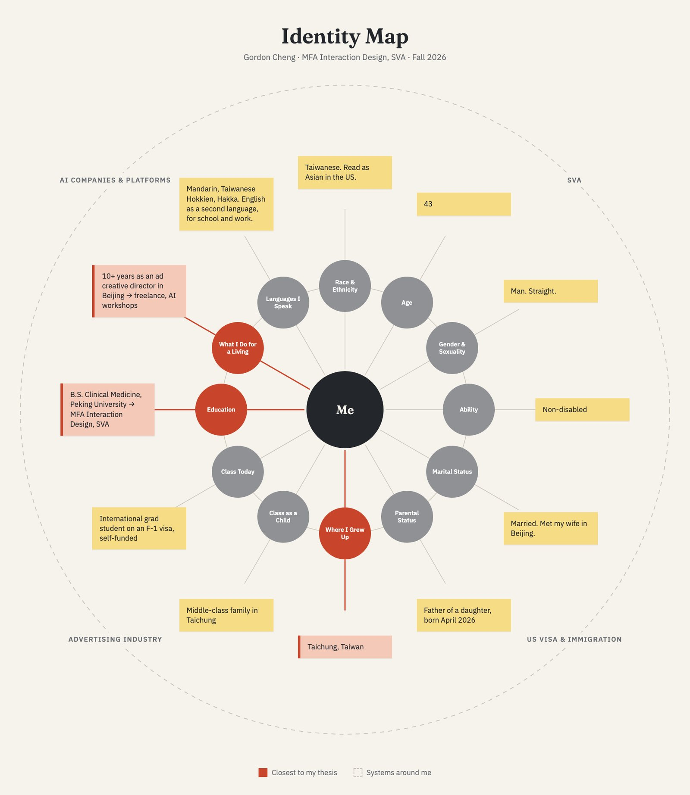
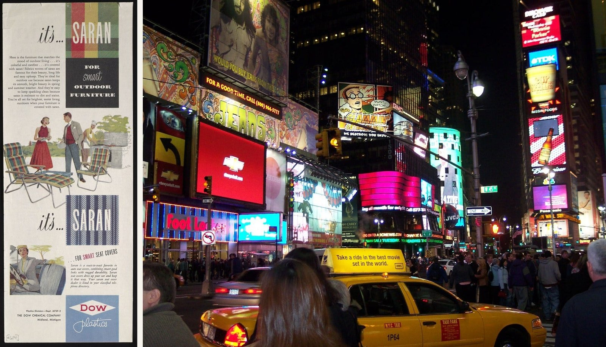
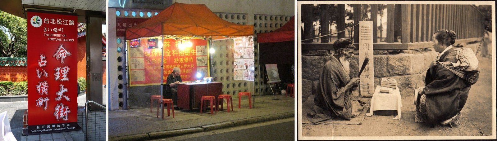
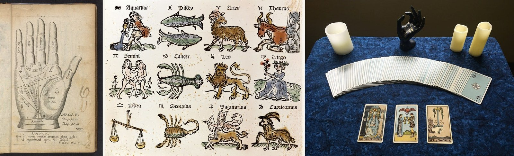
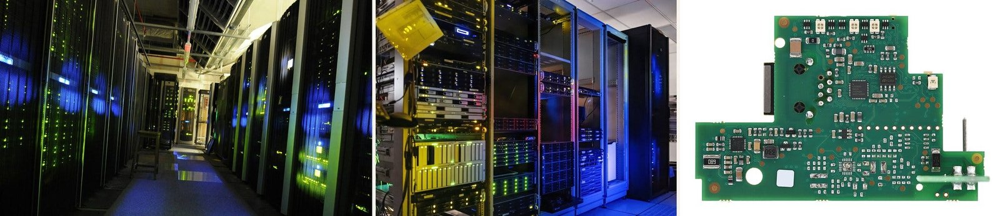
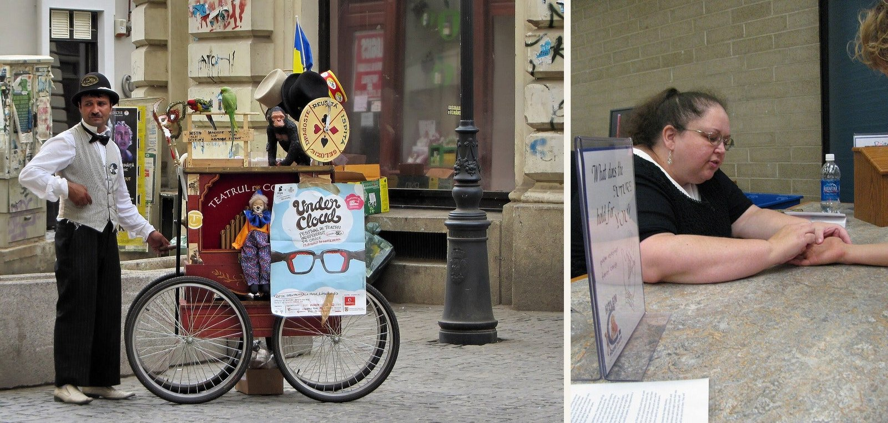
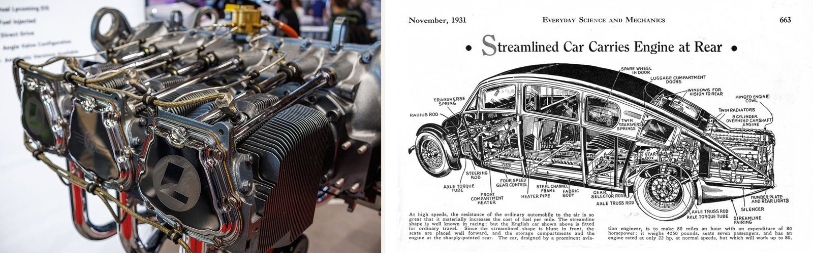

問問題的人，與說服人的人

我站在哪裡
我的論文想探討為什麼大家會用 AI 來算命。往更深一層看，我想知道這些產品背後的 system prompt 是怎麼設計出來的，也想搞懂人在面對不確定時那種渴望答案的心情，到底是怎麼跟算命連結在一起的。
在這個題目裡頭有兩種人，一種是問問題的人，另一種是把答案打造出來的人，而我同時站在這兩邊。碰到事情不確定的時候，我也會去找答案；但過去在廣告業工作的那幾年，我每天都在設計 prompt，希望大家相信我說的話。不管是汽車還是精品，那份工作就是在創造人們對某種生活方式的嚮往，而那份嚮往本身也是一種 prompt。

當我心裡不確定的時候，第一個想到的人通常是我的心理諮商師。不過諮商師的工作並不會直接給我答案，他們會聽我說、給我一點回饋，最後往往是我自己從那些回饋裡說服了自己。我也會找朋友聊，但跟朋友聊終究有限，因為朋友很少會給出那種很尖銳、或直接衝著你來的答案。當然，我也去找過算命師，只是次數不多。

我的優勢與限制
做這個題目，我的優勢在於我對 system prompt 的運作方式還算有感覺。我目前在聯絡的一些專家正好就在研究這一塊，而且我也認識實際在做 AI 算命產品的人，他們跟我分享過不少看法。我自己對 AI 和算命這兩件事都很有好奇心，加上以前在廣告業待了好幾年，本來就是靠說服別人吃飯的，所以人要怎麼被說服，我多少懂一點。
真正限制我的是我自己的文化背景。我對亞洲文化裡的算命還算認識，但對西方的傳統就沒那麼熟了。況且算命的世界非常廣，像占星、十二星座或看手相都在裡頭，光講 AI 算命範圍就已經夠大了，所以我真正碰到的難題是要怎麼把題目收斂下來。

這怎麼影響我的切入方式
每次看到有人找 AI 算命，我第一個反應都是好奇，裡頭也帶了一點質疑。算命本來就是玄學，但在我的直覺裡，AI 是很理性的工具，是根據人類已經知道的東西去做推論；反觀算命可能來自某個地方，也可能哪裡都不是，它的答案本來就是不可知的。那為什麼要把這兩件事湊在一起？大家這麼做的時候心裡在想什麼？為什麼不乾脆直接問 LLM 就好，還要特地套上一層算命的外殼？

接下來我想去聽聽使用者、算命師，還有設計這些 system prompt 的人怎麼說。同時我也對 AI 教練和 AI 心理諮商很好奇，因為背後的手法其實都一樣，就是先幫 AI 設定好身分，再讓它來回答大家面對人生選擇時的疑問。

讓大家看見自己怎麼被說服只是其中一部分，對我來說更自然的是去找底下真正的需求。每個人在人生不同階段都會碰到不確定的事，而在面對未知的時候，人總會顯露出脆弱的一面。我想這也跟自己現在的生活有關，不管是職涯還是地緣政治，幾乎所有事都充滿未知。一個人到底要怎麼消化這些？當大家轉向 AI 與算命，是不是也反映了我們這個時代的焦慮？
我心裡帶著的拉扯
我試著坦然面對這件事。我常說用 AI 就像開車一樣，你不必搞懂引擎怎麼運作，也能從 A 點開到 B 點；但要是你懂一點基本原理，遇到出狀況、發生意外或拋錨的時候，心裡就比較有底、比較從容。我覺得面對 AI 給出的答案也是一樣的道理。

往後我們只會越來越依賴 LLM 來做決定或給建議。我想透過這個研究、也透過設計，重新思考三件事之間的關係，也就是每個人面對的不確定性、AI，還有我們自己。它們不見得要取得什麼平衡，我只是想把彼此的關係看得更清楚一點。有個問題我現在還沒有答案，也打算繼續放在心上帶著走，那就是當 LLM 越來越深入我們的日常決定，我們要怎麼更懂得使用它、理解它？而 AI 算命，就是我切入這個問題的小入口。
我接下來要找誰聊
這禮拜我列了一份名單，裡頭有很多是業界的人，希望能聽他們聊聊自己是怎麼思考和設計 system prompt 的。我也期待這一塊會是整個研究挖得最深的地方。